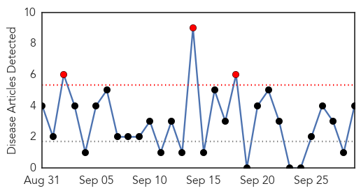
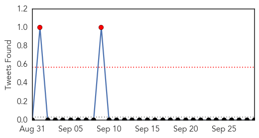
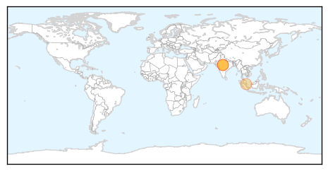
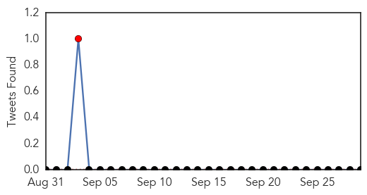
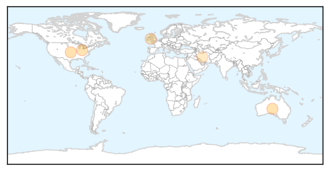
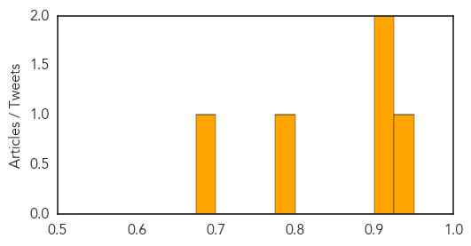

Swine Flu
30-Day Web Trend
3 alerts, 0 warnings

30-Day Twitter Trend
5 alerts, 0 warnings

Article Locations
Article Confidences

Top Articles:
Top Tweets:
-
No tweets found for Sep 29, 2015
Hepatitis
30-Day Web Trend
2 alerts, 0 warnings

30-Day Twitter Trend
1 alerts, 0 warnings

Article Locations
Article Confidences
Top Articles:
- 0.940
- The Institute of Medicine Says So! -- Health & Wellness -- Sott.net
- 0.921
- Hexaxim (Diphtheria, tetanus, pertussis , hepatitis B , poliomyelitis and Haemophilus influenzae type b conjugate vaccine) Drug
- 0.908
- Profits, Not Science, Motivate Vaccine Mandates
- 0.799
- Targeted screening strategies for HCV
- 0.679
- Debunking the Myth that Refugees Spread Disease
Top Tweets:
-
No tweets found for Sep 29, 2015